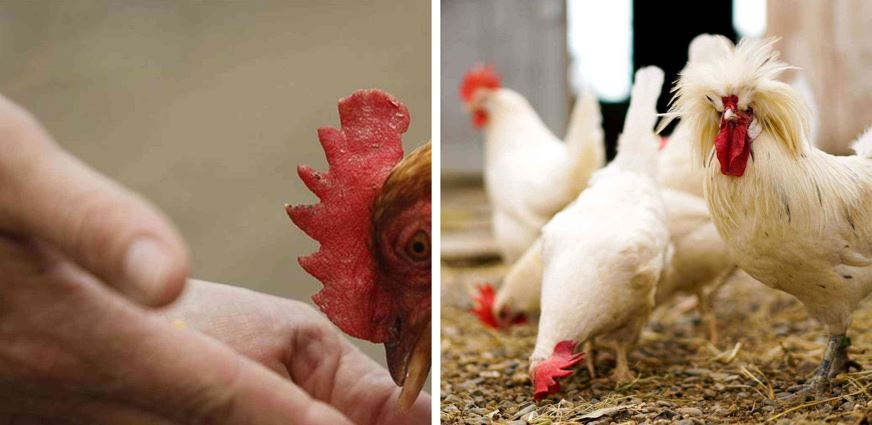

Do chickens ever attack humans?
Yes, chickens do attack humans. They however attack for many different reasons. The question most people ask is whether or not the attack is dangerous. The answer to that is a bit more complicated. When chickens attack humans, there might be many different scratches, some of which can be very nasty. There might also be the possible chance of damage to the eyes even though that is rare.
Yes, Chickens do Attack Humans
Chickens are not known to be predatory animals, and they are known to mostly get along quite fine with humans on a whole. Some chicken owners have even stated that they get genuine love and affection from their pet chicken.
However, one should note that these animals are not completely passive, they have been known to attack humans. Roosters are more likely to attack as they are the ones who are tasked with protecting other members of their flock from intruders. This means that if any chickens should attack, it would more likely be a rooster.
Story from someone attacked by chickens
Story by Minh Tran on QuoraThis is really difficult for me to relive. But for the sake of others and in the hope of preventing anyone else from experiencing this horror, I know I must tell my story. On this eventful day, it started out like any other saturday. Clear blue skies, birds singing and the wonderful feeling from knowing that I had the luxury of a whole day of nothingness to enjoy. I was happy, unaware of the horror that was to unfold. I decided to check on our pet chickens, Jack, Jill, Jack junior and little Jill. I should have suspected something was up, I had noticed them spending more and more time together. Heads together, pecking together and eating together. On this particular day, they had each looked up to eyeball me with their beady eyes as I entered their pen. Their territory. They looked as evil as chickens can possibly look evil. But I didn't think much of it. Thought it was cute actually. So I carried on cleaning out their pen and refilling their water. As soon as I turned my back and had squatted to reach their water bowl, the loud wing flapping began. I looked around in alarm as Jack and Jill climbed up a hill to attack my face. I fell over backwards and that is when the rest of the family joined in on the pecking frenzy. I swung around wildly with no success so I cried out for help. As if on cue, the evil chickens quickly waddled out the pen into the open and into freedom. That is my last memory of them, their chicken butts waddling quickly as if to mock me while I lay on my back helpless. Ok so maybe that's not really happened but if I had to part with any advice it would be to never step on a chicken because they will peck you in self defense and if you are unlucky, their friends will join in too.
Is It Dangerous When Chickens Attack?

You will not die from a chicken attack. However, if you do happen to swallow one mistakenly, the situation might change. But we all know that that's probably impossible for someone to swallow a whole chicken. So, a nasty scratch to the body or face is the most damage that chickens will cause.
If you ever get attacked and scratched by a chicken
- Clean the wounded area - this means you will have to clean the wounded area with clean running water and soap.
- Use some type of disinfectant - With any type of wound, the chance of contracting an infection is possible. To reduce this risk, you can use any type of disinfectant that is recommended by a veterinarian.
- Add antibiotic ointment - using a little bacitracin or neomycin ointment will give you an extra layer of protection from bacteria or just about any type of infection.
- Keep it clean and keep it covered - put bandage on the wound after you have gotten it clean and disinfected. Make sure you change the bandages on a regular basis. You can remove the bandages as soon as the wound starts to scab over. But, make sure to keep the area clean.
- For more serious injuries - injuries such as injuries to the face or eyes will require a visit to the doctor.
How Do You Defend Against A Chicken Attack?
Roosters are the main culprit when it comes to being attacked by chickens. They usually get aggressive when they think that you are invading on their territory. There are however different precautions in which you can take to lessen the aggression in your rooster.
How to pass a rooster
There are 3 separate strategies in which you can use to decrease the potential of being attacked by a rooster.
Three techniques to avoid chicken attack
Chickens are not highly emotional creatures. This means that they will more than likely think with their stomachs instead of their brain. This means that you will more than likely only need to use only one technique to avoid chickens.
This technique is bribing them with food. They will usually choose food over aggression.
- Chickens see the world different than us - this means that chickens divide the world into two categories, humans and chickens. They see us as a means for food. Therefore we are not seen as other chickens.
- Reduce threat level - chickens will always see us as friends because we feed them. Yet, we know we mostly feed them to prepare them for dinner later. Some of us have chickens as pets. Chickens however do not think about the future, so, they only see us as friendly humans who give them food.
- Feeding chickens warms them up to you - chickens will get more and more comfortable the more you feed them.
How To Decrease The Impact Of A Chicken Attack

If for some reason you do get attacked by chickens, it would be best if you have some sort of protection between you and the attacking chicken.
How To Prevent Annoying A Rooster
If you don't want to get on your rooster's bad side, use these simple tactics to avoid getting attacked.
- Move Swiftly - the aim is to always get out of a rooster's way as quickly as possible. The more time you spend in their way, the likely you will antagonize them.
- Try not to be aggressive - This is in rooster's terms and not in human terms. What you might see as just something simple, a rooster might might think is being aggressive.
- Do not be timid - Roosters can be bullies, so do not creep around like you are a mouse. If you however choose to be timid around a rooster, he might take that chance to show you who is boss.
- Do not scare or chase the hens - A rooster's job is to protect the hens around him. If you happen to scare or chase the hens, the rooster will more than likely attack you.
How to deal with an aggressive rooster
It will take a little while to dominate a rooster. Every rooster has a pattern in the way they might show a human that they can be dominant. Below is a list of the steps roosters usually take to show their dominance.
Dominance Process- Roosters attack with their legs, and as such, one method to use is to wear boots and when they attack, just roll him over. Do not hurt them, just keep on rolling them over each time they try to attack with their feet. Eventually a rooster will realize that you are the top rooster and give up.
- Another method to use is to try and pick up an attacking rooster and keep him against your side . Keep him there no matter how much he might flop or squawk. Just keep him there and continue to do your daily chores for about 15 - 25 minutes or just until he eventually calms down.
Chickens can get aggressive when they are sad
Some people think that chickens do not have feelings at all. However they have been known to show certain types of emotions. Below is an excerpt from the website MyPetChicken that goes over one experience of the author and her chicken.
Chickens that are scared will try to hide or run away. Some people think chickens don't get sad, but they do, especially if they don't have enough room to perform normal chicken behaviors like scratching and so forth, because their instincts are frustrated. This renders them helpless to do the things they need to! When they are sad, often let out very sad sounds that are unmistakable, the same way your dog might whimper if he is unhappy because he is hungry or needs to go outside. When I lost my favorite hen to a predator, her sister cried sad sounds for several days, and looked for her in all her favorite spots. When she realized Lily was not coming back, she followed me around for days wanting lots of petting and attention. She was lonely! When my rooster was injured, I kept him inside to recover, and his favorite ladies would all wait right outside the sliding glass door to be as near him as possible. They missed him in their chicken-y way, and I had to carry them all into the coop every night after dark, because they wouldn't go in without him. Once he came back outside, they all went in every night on their own like clockwork, just as before. If you watch your chickens closely, after a while you will be able to learn their body language and know when they are happy, sad, broody, ill, scared, mad or something different entirely.
Key things to remember when you have a rooster
6 Main Reasons Chickens Attack Each Other
- The chickens are stressed
- There might be too little light or too much light
- Their surroundings might be windy or too cold
- Ventilation could be limited in their coop
- You recently changed their diet
- You did not provide enough food the last time you fed them
- You are moving them from their home or you just moved them
- Space is limited in their coop
- They are scared of other animals or people around.
- Some type of illness is inside the coop
- The flock is uneasy with a new member you recently added
- A chicken has died or one is injured
- They are scared
- They sense a predator is close by
- Build a sturdy coop to begin with - you should ensure that the coop you build will provide your chickens with a sense of security.
- Keep roosters separate from others - roosters can be used to keep others in a flock in check. However, if you have too many roosters in the same coop, then fights and aggression might popup. Try to keep only one rooster to each flock.
- Use a wire fence - build a wire fence that is at least six feet high around your coop for extra protection.
- Keep noisy children away - noisy children can get your chickens or roosters riled up so try your best to keep them away from your coop.
- They’re sick
- The chickens are living in bad conditions
Chickens are very attentive and might even see a playful child as a threat. To keep your chickens safe from predators such as a fox, follow these steps below.
Signs your chicken might be ill
- Sudden loss of weight
- Loss of appetite
- Dullness in their eyes
- Avoiding the rest of the pack
- Difficulty walking
- Losing feathers or fluffed-up feathers
- Lethargy
- Not laying any more eggs
- Any abnormal behavior for your chicken
What is a pecking order
Just like back in the day when this world was based on kings, servants, and other regular people. Chickens have order in their flock. Chickens will show their dominance within their flock and whosoever is the most dominant will eat first.
Whenever you see your chicken fighting for the first time you might think it is just plain aggression that you need to fix. However, this might just be chickens simply creating their pecking order. A chicken's pecking order is very important as it creates a system within the flock. To differentiate between a chicken's pecking order system or just plain aggression, just know that a pecking order fight will bve over quickly while aggression within the flock will be ongoing.
Do chickens show affection to humans?
Hens understand when their babies or other chickens around are in discomfort. They display anxiety and stress when near other chickens experiencing any type of distress.
When a chicken has been rid of from its flock, her character begins to emerge. Chickens most typically reveal love by following their human companion around fanatically. Feeding them by placing food in your hand will definitely seal the bond in between chicken and human.
Chickens are rather smart. If you have any type of chicken, you might have seen how they see everything and everybody.
Chicks, while establishing inside their eggs, will get both affection and love from Mommy Hen. When a hen's babies hatch, mommy hen will keep a close eye on them. Keeping them safe and free from harm.
FAQ Section
Question 1: Why would a rooster attack a human?
Roosters mostly attack humans if they feel like you are harming their hens.
Question 2: Will a rooster attack kids?
Roosters see all us humans as just simply humans. If they see anyone as a threat, they will attack without thinking.
Question 3: What is it called when a rooster attacks you?
There are many people that do not know what a rooster attack is called. It is called 'flogging'.
Question 4: Has anyone ever died from a chicken attack?
Yes, there has been at least one fatal attack in Australia 2019 when a woman was attacked by her pet rooster while collecting eggs in her backyard.
Do chickens attack humans? Yes, they do at times. But roosters are the main culprit till you show them that you are dominant. Being attacked by a chicken is not as dangerous as it might seem unless they somehow attack you in the face.
-
Last Post Can your dog eat sausages

Is it safe for our dogs to eat sausage? This post goes over all aspects of your dog and sausages.
Can you dog eat bacon?

What really happens when your dog eats bacon? Is it safe?
What can rabbits eat??

What can rabbits eat and what can't they eat?
-
Something of note

Pets are at times our best friends. We should all take care of them with everything we have. They depend on us for food and shelter and they in turn give us their love and attention. We love our dog Sage and could never see ourselves living without her.